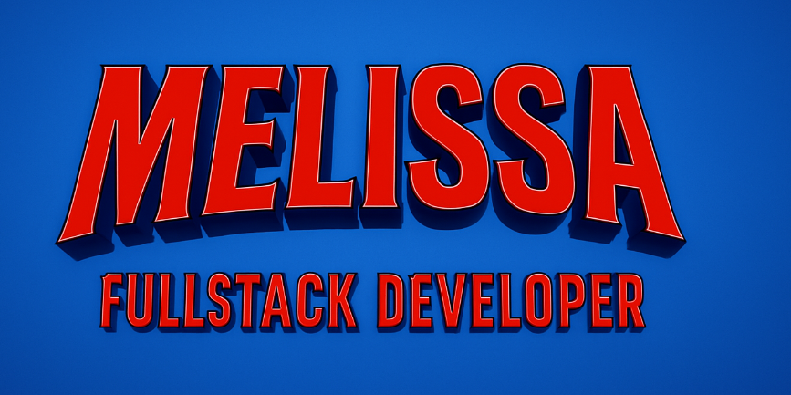
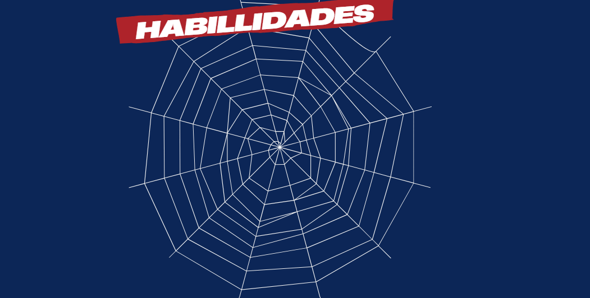
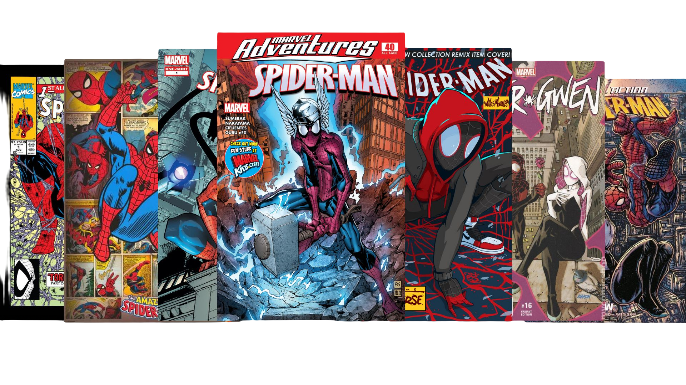
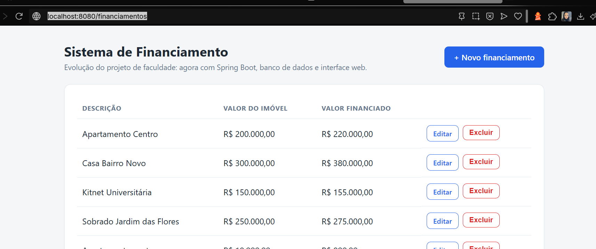
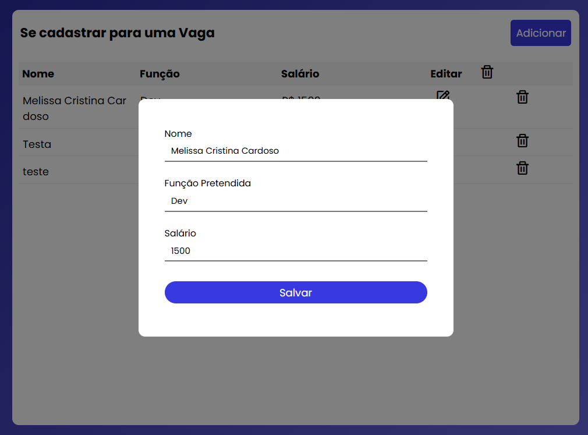
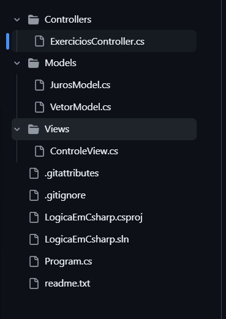
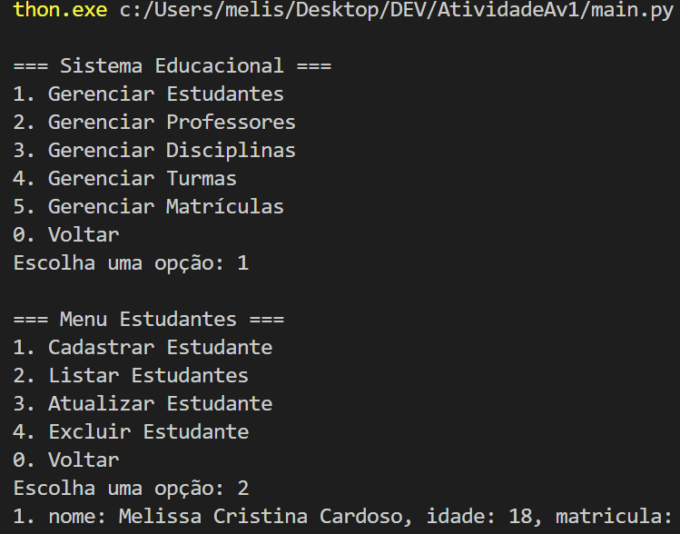
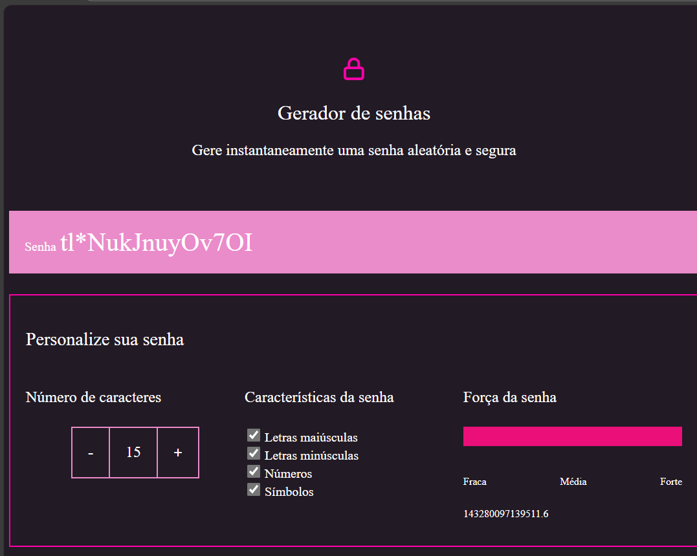

ESTÁGIO
Estagiária de Tecnologia
Tecnologia • QA • Banco de Dados


Me identifico com o Peter Parker! Não por conseguir grudar nas paredes, mas porque, assim como ele, estou constantemente aprendendo a lidar com responsabilidades que parecem maiores do que eu. @
Como desenvolvedora júnior, ainda estou construindo minha experiência, enfrentando desafios novos todos os dias e descobrindo que nem todo problema vem com uma solução pronta. Na era da IA, saber programar deixou de ser apenas escrever código: é preciso entender o que está sendo construído, questionar respostas, enxergar detalhes e ter aquele “sentido-aranha” sempre alerta para encontrar um bug escondido, uma regra de negócio que não faz sentido ou aquele pequeno detalhe que pode virar um problemão em produção.
No fim, acho que ser desenvolvedora é um pouco como ser o Homem-Aranha: você não precisa saber tudo — precisa ter curiosidade para aprender, responsabilidade para fazer melhor e coragem para encarar o próximo desafio.
E, claro, sempre deixar o código um pouco melhor do que encontrou. ¢
Comecei minha trajetória na tecnologia aos 16 anos, ainda no ensino médio, e desde então a programação virou muito mais que uma profissão: é uma das formas que encontrei de transformar curiosidade em coisas reais. Sempre fui apaixonada por tecnologia — culpa (boa) do meu pai, que me apresentou telas e videogames desde muito nova e, sem saber, também me apresentou o caminho que eu queria seguir.
No início da carreira passei por áreas como QA, Banco de Dados e automação de testes, até descobrir no Back-end o lugar em que realmente queria me aprofundar. Hoje trabalho principalmente com C# e .NET, desenvolvendo APIs REST, microsserviços e integrações entre sistemas — e, quando preciso, não tenho problema nenhum em colocar a mão no Front-end também.
Gosto de entender como as coisas funcionam, investigar problemas e descobrir o que está acontecendo por trás de uma aplicação. Talvez seja por isso que o Homem-Aranha combine tanto comigo: não por conseguir subir paredes, mas porque gosto da ideia de estar sempre aprendendo a lidar com responsabilidades maiores do que as que eu tinha ontem.
Hoje tenho 19 anos e, fora do trabalho, sou basicamente o que este site já entrega: curto cultura geek, jogo bastante (time Xbox, sem discussão), vou pra academia e adoro sair com meus amigos.
Ainda estou construindo minha história na tecnologia, mas uma coisa continua igual desde os 15 anos, quando tive meu primeiro contato com programação: aquela sensação de "nossa... é isso".



C#, Python, JavaScript, TypeScript, Java, SQL
.NET, ASP.NET MVC, WebForms, Angular, Swagger, Postman
Kibana, Grafana
SQL Server, PostgreSQL, MongoDB (consultas e modelagem relacional)
Selenium, NUnit
APIs REST, filas (RabbitMQ)
Scrum, Kanban
Git (PRs, branching), Azure DevOps
Raciocínio lógico, modelagem de software, resolução de problemas, documentação técnica, colaboração em equipe
Do primeiro estágio ao Back-end.
Do ensino médio à faculdade, passando por uma pilha de cursos.
Ainda no ensino médio, escolhi o itinerário de Exatas — e foi ali que tudo começou. Matérias como Matemática 2 (Programação), Matemática 3 (Resolução de Problemas), Pensamento Computacional e Biotecnologia surgiram na grade, e desde a primeira aula eu pensei: nossa, é isso!
Sempre curti tecnologia, mas foi na aula de Pensamento Computacional, aos 15 anos, que aquilo fez sentido de verdade pela primeira vez — estávamos aprendendo a fazer o jogo do Pong em Java, e foi gratificante ver, na prática, o resultado de um código que eu mesma escrevi.
Dali em diante, comecei a assistir cursos no YouTube por conta própria: primeiro Portugol, depois JavaScript, HTML, CSS e por aí foi.
Atualmente estou indo para o 6º semestre de Análise e Desenvolvimento de Sistemas na PUC-PR.
Ver atestado de matrícula ↗
Algumas coisas que já tirei do papel.

DESTAQUEProjeto de faculdade evoluído: começou como um programa Java simples rodando no console e virou uma aplicação web completa, com Spring Boot, arquitetura em camadas (Controller, Service, Repository), banco de dados H2 via Spring Data JPA e interface renderizada com Thymeleaf. Permite cadastrar, listar, editar e excluir financiamentos com validação de dados.

Sistema CRUD completo desenvolvido em JavaScript puro, com layout simples e funcional. Permite cadastrar, listar, editar e excluir vagas de emprego, com os dados persistidos em um arquivo .json para que nada se perca ao encerrar o navegador.

Exercícios de lógica resolvidos com Programação Orientada a Objetos, seguindo boas práticas de arquitetura MVC.

Gerenciamento de dados educacionais (estudantes, professores, turmas) via terminal, com menus intuitivos e persistência em .json.

Aplicação que gera senhas aleatórias com base nos parâmetros escolhidos pelo usuário.